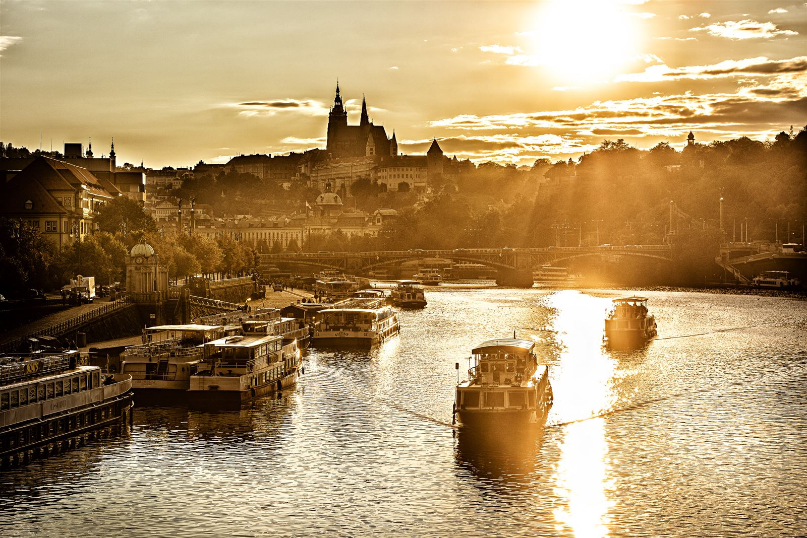

Місце народження: Ліван, м.Шместар, Дата народження: 16.02.2005
Освіта: ЗССО№20699, Пирятинський ліцей №4 м.Пирятин, НТУУ КПІ м.Київ
Хобі:
Улюблені книжки:
Прага - столиця та найбільше місто Чехії, адміністративний центр Середньочеського краю, а також двох його районів Прага-Захід та Прага-схід.
У X-XII століттях Прага була столицею Чеського князівства, У XII-XVIII століттях - столицею Чеського Королівства,
У 1806-1867 рр. - столицею Чеського королівства у складі Автрійської імперії, У 1867-1918 рр. - провінційним містом Австро-Угорщини,
У 1918-1939 та 1945-1948 рр. - столицею Чехословацької Республіки, У 1939-1945 рр. - німецького протекторату Богемії та Моравії,
У 1948-1990 рр. - Чехословацької Соціалістичної Республіки, У 1990-1992 рр. - Чехословацької Федеративної Республіки, А з 1993-го року - столицею Чеської Республіки.
